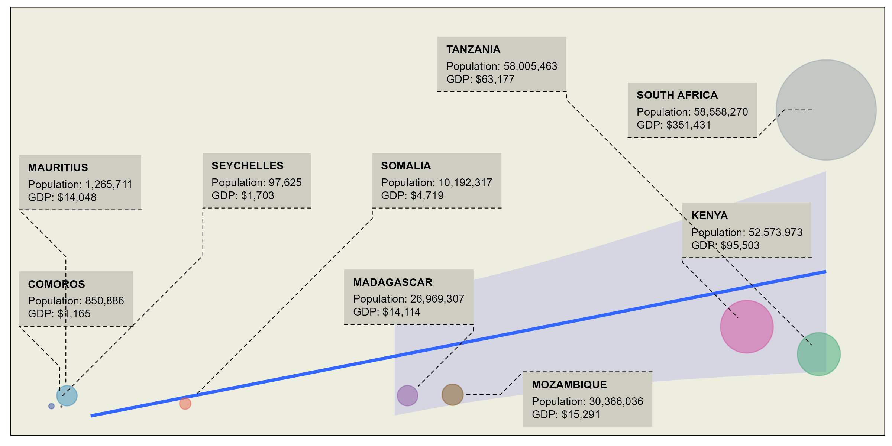
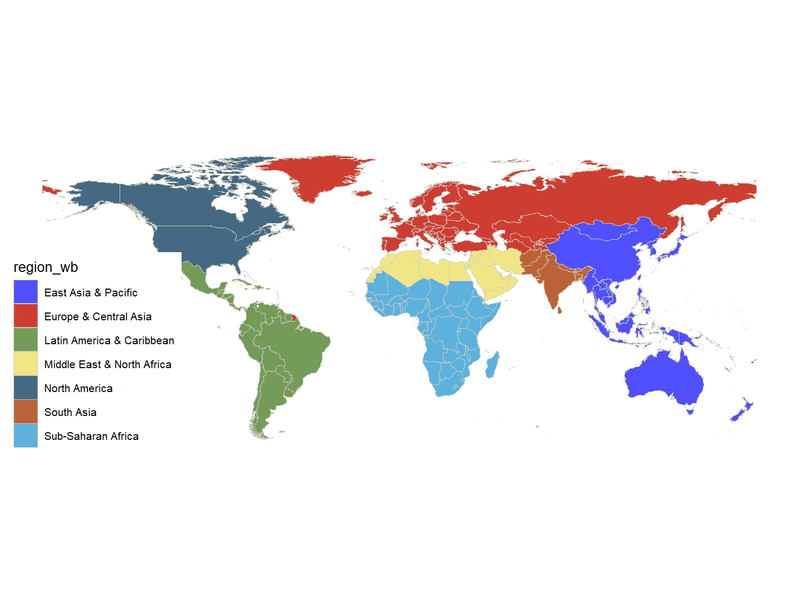
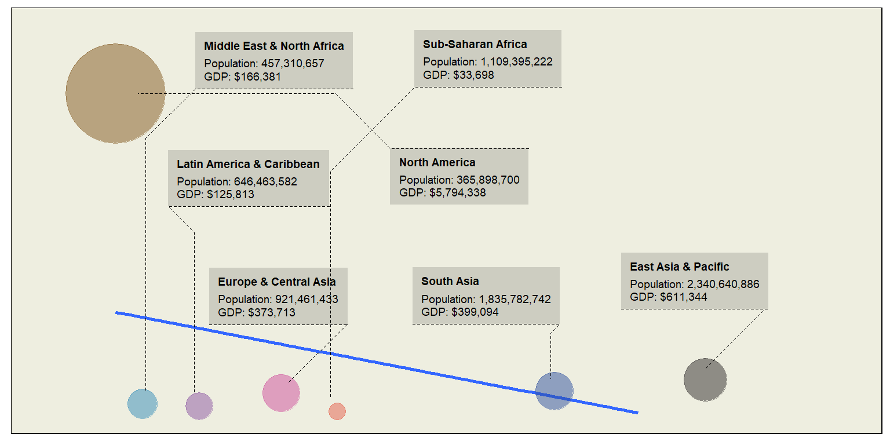
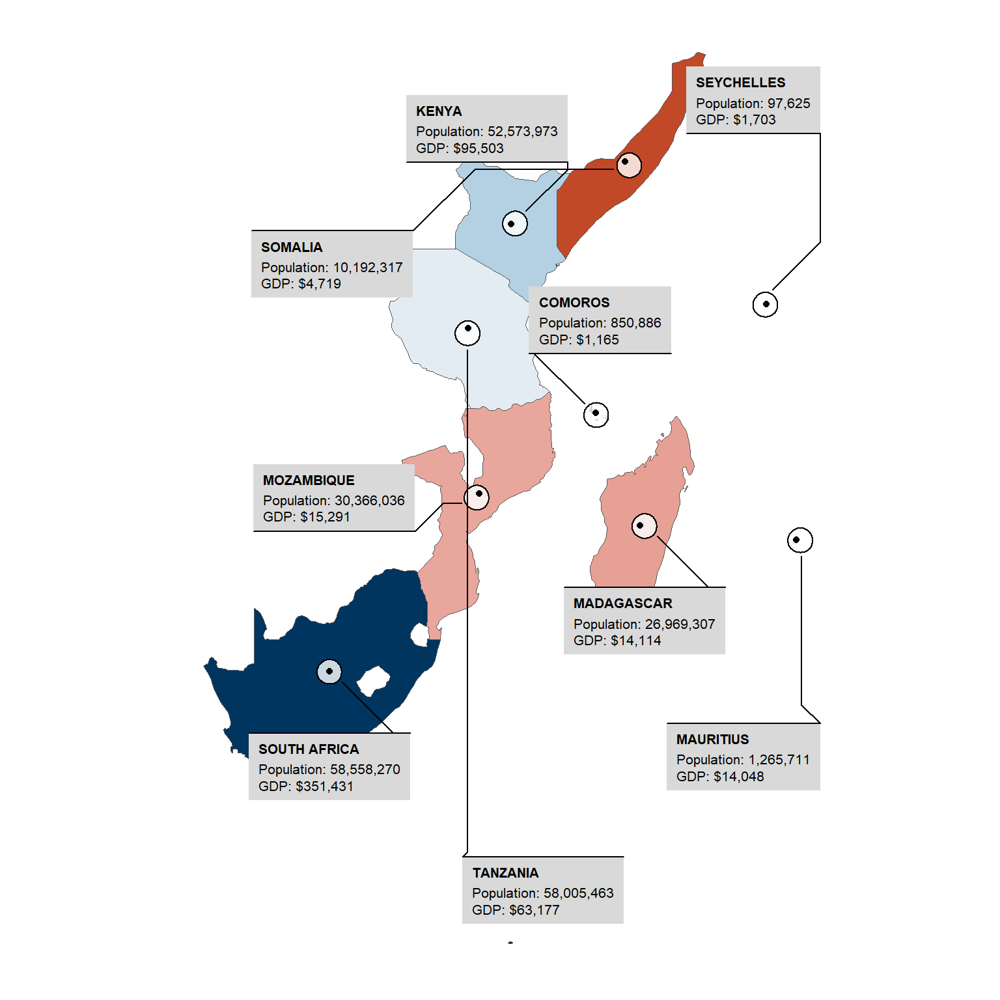
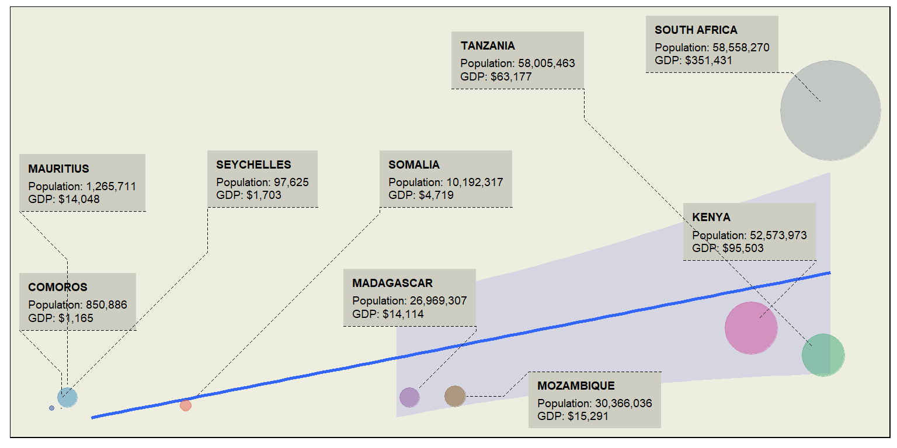

![]()
Introduction
This post gives a brief overview of the GDP and population of Somalia, Kenya, Tanzania, Mozambique, South Africa, Madagascar, Seychelles, Comoros, Mauritius, and Réunion based on 2019 data from the World Bank.

First, we need to load the required packages. These packages will provide the necessary functions and datasets to create our map. If the packages are not installed, please install them first before loading them in the session
Dataset
We retrieve world map data using the ne_countries function from the rnaturalearth package (Massicotte and South, 2023). This function returns spatial data for world countries. We need to specify that we need a spatial data as a simple feature
World
We can map the dataset to visualize the world division based on world bank, which divide the world into eight distinct groups.
world |>
filter(!region_wb == "Antarctica") |>
ggplot()+
geom_sf(aes(fill = region_wb), color = "ivory3", linewidth = .1)+
ggthemes::theme_map(base_size = 10)+
ggsci::scale_fill_igv()
And further explore the link between population and gross domestic product of these distinct groups
world |>
filter(!region_wb == "Antarctica") |>
st_drop_geometry() |>
as_tibble() |>
group_by(region_wb) |>
summarise(
pop = sum(pop_est),
gdp = mean(gdp_md)
) |>
mutate(
# name = str_to_upper(region_wb),
description = paste0(
"Population: ", scales::number(pop, big.mark = ","),"\n",
"GDP: $", scales::number(gdp, big.mark = ",")
)
) |>
ggplot(aes(x = pop/1000000, y = gdp))+
geom_smooth(method = "lm", fill = "blue", alpha = .1)+
geom_point(alpha=0.5, aes(size = gdp, color = region_wb)) +
scale_size(range = c(5, 30), name="GDP")+
ggforce::geom_mark_circle(aes(
label = region_wb, group = region_wb, description = description),
expand = unit(0, "mm"), label.fontsize = 7, label.fill = "ivory3",
con.size = unit(.25, "mm"), con.type = "elbow", con.linetype = "dashed", position = "jitter"
)+
scale_x_continuous(limits = c(150,2800),labels = scales::label_number(big.mark = ","), name = "Population (Millions)")+
scale_y_continuous(limits = c(-10000,7000000),labels = scales::label_number(big.mark = ",", prefix = "$"), name = "Gross Domestic Product")+
ggthemes::theme_map(base_size = 10)+
theme(legend.position = "none", panel.background = element_rect(fill = "ivory2"))+
ggsci::scale_color_cosmic()
WIO region
Then we filter the countries that are within the Western Indian Ocean region. We use filter function from dplyr package (Wickham et al., 2019) to pick ten countries in the region.
wio.tb = wio.sf |>
st_centroid() |>
st_coordinates() |>
as_tibble() |>
select(lon = 1, lat = 2) |>
bind_cols(
wio.sf |>
st_drop_geometry() |>
separate(economy, into = c("a", "economy"), sep = 2) |>
separate(income_grp, into = c("a", "income_grp"), sep = 2) |>
select(-a) |>
mutate(
name = str_to_upper(name),
description = paste0(
"Population: ", scales::number(pop, big.mark = ","),"\n",
"GDP: $", scales::number(gdp, big.mark = ",")
)
)
)Somalia had a GDP of about 5.2 billion and a population of around 15.4 million. The economy relies heavily on agriculture, remittances, and livestock trade. Kenya’s GDP was approximately 95.5 billion, with a population of about 52.6 million. The economy is diverse, including agriculture, manufacturing, tourism, and services. Tanzania recorded a GDP of about 63.2 billion and a population of approximately 58 million. Its economy is mainly driven by agriculture, mining, tourism, and manufacturing.
Mozambique had a GDP of around 14.6 billion and a population of about 30.4 million. The economy is based on agriculture, mining, and natural gas production. South Africa’s GDP was 351.4 billion, with a population of roughly 58.6 million. The economy is diverse, including mining, manufacturing, services, and agriculture. Madagascar recorded a GDP of approximately 14.5 billion and a population of about 26.3 million. The economy relies on agriculture, mining, and tourism.
Seychelles had a GDP of about 1.6 billion and a population of around 98,000. The economy depends on tourism, fishing, and offshore financial services. Comoros recorded a GDP of approximately 1.2 billion and a population of about 850,000. The economy is driven by agriculture, fishing, and remittances. Mauritius had a GDP of around 14 billion and a population of about 1.3 million. The economy benefits from tourism, textiles, sugar, and financial services. Réunion had a GDP of approximately 24.8 billion and a population of around 859,000. The economy is supported by tourism, sugarcane production, and financial aid from France.
ggplot() +
ggspatial::layer_spatial(data = wio.sf, aes(fill = gdp), )+
scale_fill_gradientn(colours = hcl.colors(n = 12, palette = "RdBu"), trans = scales::modulus_trans(p = .2), guide = guide_legend(title = "GDP"))+
ggforce::geom_mark_circle(
data = wio.tb,
aes(x = lon, y = lat, label = name, group = name, description = description, fill = gdp),
show.legend=F, fill = "white",
alpha=0.8,
label.fontsize = 8,
label.fill = "grey85",
position = "jitter",
con.type = "elbow",
label.buffer = unit(8, "mm"),
expand = unit(2.5, "mm"),
con.cap = unit(.8, "mm"),
con.size = unit(.5, "mm"),
con.colour = "black")+
geom_point(data = wio.tb, aes(x = lon, y = lat)) +
ggthemes::theme_map()+
theme(legend.position = "none")
Assessment of Trends
When comparing GDP to population sizes, there is a general trend where countries with larger populations tend to have higher GDPs. For instance, South Africa, with the highest GDP of 351.4 billion, also has one of the largest populations at 58.6 million. Kenya and Tanzania, both with populations over 50 million, also have relatively high GDPs of 95.5 billion and 63.2 billion, respectively.
Conversely, smaller countries in terms of population, such as Seychelles and Comoros, have significantly lower GDPs, which aligns with the trend that smaller populations often correlate with lower economic output. Seychelles, with a population of around 98,000, had a GDP of 1.6 billion, and Comoros, with a population of about 850,000, had a GDP of 1.2 billion.
However, there are exceptions. Mauritius, despite its smaller population of about 1.3 million, had a relatively high GDP of 14 billion, highlighting a strong and diverse economy. Similarly, Réunion, with a population of 859,000, had a GDP of 24.8 billion, benefiting from financial aid and support from France.
wio.tb |>
ggplot(aes(x = pop/1000000, y = gdp))+
geom_smooth(method = "lm", fill = "blue", alpha = .1)+
geom_point(alpha=0.5, aes(size = gdp, color = name)) +
scale_size(range = c(.1, 30), name="GDP")+
ggforce::geom_mark_circle(aes(
label = name, group = name, description = description),
expand = unit(0, "mm"), label.fontsize = 7, label.fill = "ivory3",
con.size = unit(.25, "mm"), con.type = "elbow", con.linetype = "dashed", position = "jitter"
)+
scale_x_continuous(limits = c(0, 60), labels = scales::label_number(big.mark = ","), name = "Population (Millions)")+
scale_y_continuous(limits = c(-10000,450000), labels = scales::label_number(big.mark = ",", prefix = "$"), name = "Gross Domestic Product")+
ggthemes::theme_map()+
theme(legend.position = "none", panel.background = element_rect(fill = "ivory2"))+
ggsci::scale_color_cosmic()
Conclusion
While there is a general trend that larger populations correlate with higher GDPs, other factors such as economic diversity, external financial support, and specific industry strengths can also significantly impact a country’s GDP regardless of its population size.
References
Citation
@online{semba2024,
author = {Semba, Masumbuko},
title = {Mapped: The {GDP} of {WIO-Region}},
date = {2024-07-28},
url = {https://lugoga.github.io/kitaa/posts/mapping_wio/},
langid = {en}
}